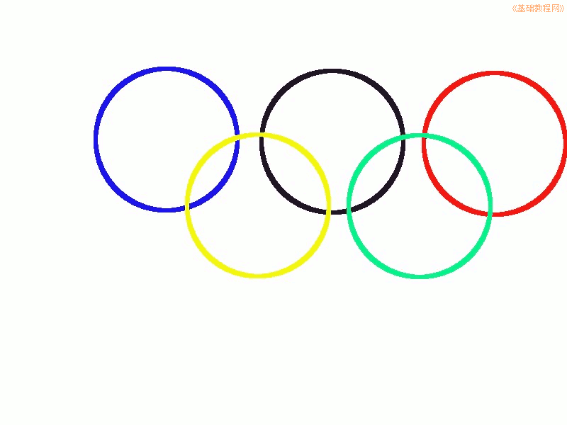

2012-2013 第二学期八年级图像处理教学设计
作者：TeliuTe 来源：基础教程网
十四、学会奥运五环 返回目录 下一课
（一）教学设计
1、学习目标：学会奥运五环
2、注意事项：绕过弯来，既不要跳也不要落，一楼过了二楼
3、教学过程：
1）教师准备学案和板书；
2）学生整队进入，开机抄黑板上笔记；
3）教师讲解板书演示操作；
4）学生打指法、日志、完成操作；
5）教师打勾记录学生指法成绩，检查日志和操作；
注：学生抄完笔记就开始打指法、日志，老师讲完后再继续完成；
（二）板书设计(学生笔记)
第14课 学会奥运五环
1蓝，黄，黑，绿，红五个正圆
2新建800×600,新建五个图层，重命名
3椭圆工具，固定大小200×200
4点出圆框，点“编辑，勾画选区”（6.0像素，颜色）
--
操作指南：
1、图层点右键，图层属性，重命名
2、图层面板一层一层画圆
操作图示：

（三）课后记 2013-05-08 12:05
--
上周没上课，来了果然野的
把学习放在前面，爱说话的逮住就训
--
没精力训了，差不多就过了
有几个一点都不学的，根本没想到将来要靠学习来生活
--
学生不把学习当成重点，老师还没办法
除了训没有实质性的办法，这是怎么回事
--
只是画出一个圆来，不要求套上
相对比较简单，只是有些图层面板找不到了
--
绕弯还是有些问题，学的时候记不住
还有的是前面听着，后面就忘记了
--
开学说的期中开网，学生一直等着，做的也还整齐
来了要求把学习的先做完，然后打开squid3代理
--
webqq要把下边的“为所有协议使用相同”勾上
前面费了许久没想到，偶然转过弯来
--
常常给学生说“学习不绕弯，老师都愁死了”
发现自己有些迟钝了，记不住五种颜色
--
注意绕弯颜色和图层，方法都是一样的
就像走楼梯，拐来拐去，一楼二楼往上上
返回目录 下一课
本教程由86团学校TeliuTe制作|著作权所有
基础教程网：http://teliute.org/
美丽的校园……
转载和引用本站内容，请保留作者和本站链接。